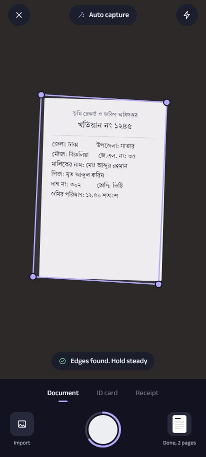
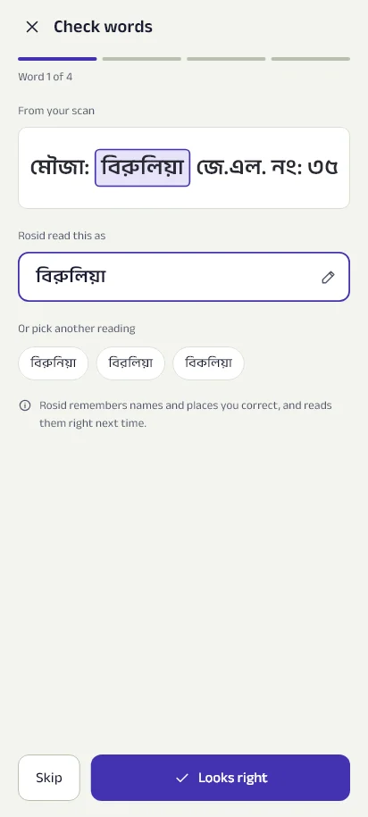
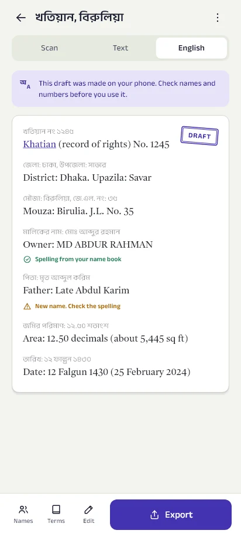
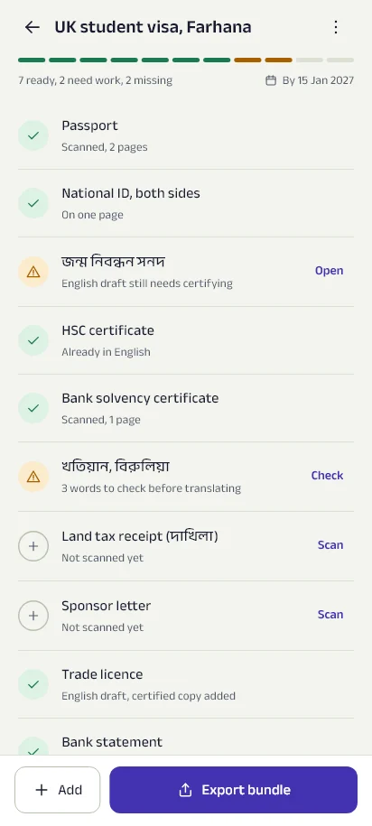

1
Scan
The camera finds the edges of the paper and takes the picture itself.
Rosid is a free Android app that works without the internet. Your papers never leave your phone.
Older 32-bit phone? Get the other file.
Version 2.0.0 for Android 8 or newer
ভূমি রেকর্ড ও জরিপ অধিদপ্তর
খতিয়ান নং ১২৪৫
Directorate of Land Records and Surveys
Khatian No. 1245

The camera finds the edges of the paper and takes the picture itself.

Words Rosid was unsure of are marked. Fix them against the photo.

Names keep their passport spelling. Land units and Bangla dates are converted.

Collect papers against a checklist, then export one PDF.
Old deeds, new certificates, shop receipts. If it is on paper, in Bangla or English, Rosid can keep it, read it and find it again.


Embassies and offices usually want a translation signed by a translator or notary. Rosid gives them a clean draft to check and a page to sign.
Printed Bangla reads well. With handwriting, Rosid marks every word it is unsure of, and you fix it against the photo.
Rosid has no internet permission. It cannot upload a paper even if it tried.
Check it yourself in Android settings, under Apps, Rosid, Permissions.
Tap the download button on this page.
Android asks once to let your browser install apps.
Pick your language and scan your first paper.
If you installed version 1, uninstall it first. This version is signed differently.
Rosid never goes online, so it cannot update itself. New versions appear on this page.